Инструменты для терминала.
Даже в кармане.
Open-source утилиты на Python, которые запускаются в Termux на Android так же, как на обычном Linux: OSINT из командной строки, локальный LLM-агент с tool-calling, сетевой монитор и аудит Wi-Fi.
$ ollama serve & $ python3 agent.py "что лежит в этой папке?" → tool: list_dir(path=".") → agent.py config.py llm_client.py tools.py tests/
# демо запуска termux-agent
Проекты
Всё открыто на GitHub. Нажмите на карточку, чтобы перейти к коду.
termux-agent
Python · MITЗачем: ИИ-помощник для терминала, который работает офлайн на телефоне.
Локальный LLM-агент с tool-calling для Termux. Модель крутится через Ollama прямо на телефоне, агент только дирижирует вызовами инструментов. Никакого облака.
- REPL и одноразовые запросы, выбор модели и хоста флагами
- Инструменты: shell, файлы, OSINT-лукапы через Xnode
- Подтверждение опасных операций по умолчанию, тесты на pytest
xnode-osint
Python · MITЗачем: быстро проверить публичные следы email и разобрать API из консоли.
OSINT-утилиты для командной строки. Только пассивная разведка по открытым источникам: без брутфорса и обхода авторизации.
email_osint.py— проверка email по публичным сервисамholehe_runner.py— обход бага trio-сигналов в proot, чистый JSON на выходеapi_parser.py— парсер JSON API с пагинацией, ретраями и обработкой 429
sockpuppet-hunter
Python · MITЗачем: понять, что несколько профилей принадлежат одному человеку.
Детектор связанных аккаунтов. Сшивает разные профили в кластеры по совокупности сигналов — не просто ищет «где зарегистрирован».
- Perceptual hash аватарок, схожесть никнеймов, bio-overlap
- ~30 платформ: GitHub, Reddit, TikTok, Telegram и др.
- Экспорт в JSON и Mermaid-граф кластеров
netmon
Python · WindowsЗачем: видеть, что происходит в домашней сети Windows.
LAN-монитор для Windows. Инвентаризация устройств, DNS-лог через ETW, захват трафика через PktMon, доступ к роутеру.
- OUI-база: MAC → производитель без интернета
- DNS-лог в реальном времени через ETW-канал
- pcap-экспорт для Wireshark
vibe-chat
Python · Node.jsЗачем: сравнивать двух AI-агентов в одном окне терминала.
TUI-чат с двумя AI-агентами одновременно: Claude Code и opencode в одном терминальном интерфейсе на Textual.
- Режимы: только Claude, только opencode, оба сразу
- История контекста, переключение горячими клавишами
- Модель opencode настраивается через env-переменную
wifi-audit
Python · stdlibЗачем: проверить, насколько слабый у вас пароль Wi-Fi.
Аудитор паролей Wi-Fi без зависимостей. Словарь топ-10k, паттерны дат и годов, русские имена, энтропия и оценка по 100-балльной шкале.
- Детект qwerty / йцукен / дата / повторы
- ~200 русских и транслит-имён в базе
- Только Python stdlib — ничего устанавливать не нужно
terminal
в разработкеЗачем: новый терминальный проект лаборатории.
Проект в разработке. Публичного релиза пока нет; подробности появятся, когда он будет готов.
Контакты
Дисклеймер
Инструменты — для легального использования. Код предназначен для легального тестирования собственных систем, участия в CTF и защиты. Применение к чужой инфраструктуре без письменного разрешения владельца — преступление. Автор не несёт ответственности за действия пользователей.